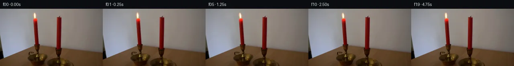

![首帧]()

Round 00
2026-11-05T05:48:52.742487+00:00像素候选变化代码 +131/−0inspection 更新
pixels a96a2c244b10f48f · code 929a84eec8696860
查看本轮 generate.py 真实 diff
--- previous/generate.py
+++ current/generate.py
@@ -0,0 +1,131 @@
+"""Continue the photographed candle using only local numerical pixel warps."""
+from pathlib import Path
+import json
+
+import numpy as np
+from PIL import Image, ImageDraw
+from scipy.ndimage import map_coordinates
+
+from artifact_io import save
+
+
+ROOT = Path(__file__).resolve().parent
+# Tip displacement, change in height, and fractional flame brightness.
+# The photographed wick is the fixed pivot for every deformation.
+PLAN = np.array([
+ [0.00, 0.00, 0.00], [0.20, 0.40, 0.01],
+ [0.55, 0.90, 0.02], [0.25, 0.35, 0.00],
+ [-0.35, -0.55, -0.02], [-0.65, -0.15, -0.01],
+ [-0.20, 0.60, 0.01], [0.35, 1.05, 0.02],
+ [0.70, 0.30, 0.01], [0.10, -0.65, -0.02],
+ [-0.40, -0.30, -0.01], [-0.70, 0.55, 0.01],
+ [-0.25, 1.20, 0.02], [0.30, 0.45, 0.01],
+ [0.60, -0.40, -0.01], [0.05, -0.80, -0.02],
+ [-0.50, 0.15, 0.00], [-0.30, 0.75, 0.02],
+ [0.20, 0.35, 0.01], [0.05, 0.10, 0.00],
+], dtype=np.float64)
+
+
+def make_frames(source):
+ frames = np.repeat(source[None], 20, axis=0)
+ original = source.astype(np.float64)
+ # A small smooth warp field keeps the surrounding photographed wall,
+ # candle bodies, table, and camera exactly stationary.
+ y, x = np.mgrid[5:26, 77:98].astype(np.float64)
+ height_fraction = np.maximum(0.0, (24.0 - y) / 14.0)
+ side_taper = np.maximum(0.0, 1.0 - ((x - 87.0) / 10.0) ** 4) ** 2
+ top_taper = np.clip((y - 5.0) / 3.0, 0.0, 1.0)
+ top_taper = top_taper * top_taper * (3.0 - 2.0 * top_taper)
+ support = side_taper * top_taper
+
+ # Estimate the featureless grey wall's RGB plane from the sides of the
+ # same source patch, solely to isolate the positive luminous signal.
+ samples = ((x <= 80.0) | (x >= 94.0)) & (y < 24.0)
+ design = np.stack([np.ones_like(x), x - 87.0, y - 17.0], axis=-1)
+ plane_coefficients = np.linalg.lstsq(
+ design[samples], original[5:26, 77:98][samples], rcond=None
+ )[0]
+ background = design @ plane_coefficients
+
+ for i, (bend, extension, brightness) in enumerate(PLAN[1:], start=1):
+ # Inverse resampling: stretching upwards samples nearer the anchored
+ # base. Both displacement components vanish at y=24 and patch edges.
+ sy = y + extension * height_fraction * support / (1.0 + extension / 14.0)
+ sx = x - bend * height_fraction ** 1.25 * support
+ patch = np.stack([
+ map_coordinates(original[..., c], [sy, sx], order=1, mode="nearest")
+ for c in range(3)
+ ], axis=-1)
+ luminous = np.maximum(0.0, patch - background)
+ patch += brightness * luminous * (support * (y < 24))[..., None]
+ frames[i, 5:26, 77:98] = np.clip(np.rint(patch), 0, 255).astype(np.uint8)
+ return frames
+
+
+def transition_sheet(frames):
+ """Make all 19 adjacent comparisons visible, including the first step."""
+ sheet = Image.new("RGB", (1000, 720), (24, 27, 33))
+ draw = ImageDraw.Draw(sheet)
+ draw.text((12, 9), "Adjacent-frame checks: prior / next / absolute RGB difference x4", fill="white")
+ draw.text((12, 28), "Flame crops enlarged 3x. Difference colors are diagnostic only.", fill=(180, 186, 197))
+ for i in range(1, 20):
+ col, row = (i - 1) % 5, (i - 1) // 5
+ left, top = col * 200 + 9, row * 164 + 56
+ a, b = frames[i - 1, 4:29, 78:96], frames[i, 4:29, 78:96]
+ diff = np.abs(b.astype(np.int16) - a.astype(np.int16))
+ draw.text((left, top), f"{i-1:02d} -> {i:02d}", fill="white")
+ for j, patch in enumerate((a, b, np.minimum(diff * 4, 255).astype(np.uint8))):
+ thumb = Image.fromarray(patch).resize((54, 75), Image.Resampling.NEAREST)
+ sheet.paste(thumb, (left + j * 60, top + 21))
+ draw.text((left, top + 106), f"max delta: {int(diff.max())}", fill=(180, 186, 197))
+ draw.text((left, top + 123), f"mean crop delta: {diff.mean():.2f}", fill=(180, 186, 197))
+ sheet.save(ROOT / "transition_check.png")
+
+
+def verify(frames):
+ with np.load(ROOT / "pixels.npz") as artifact:
+ tensor = artifact["pixels"]
… diff truncated; 44 more lines …